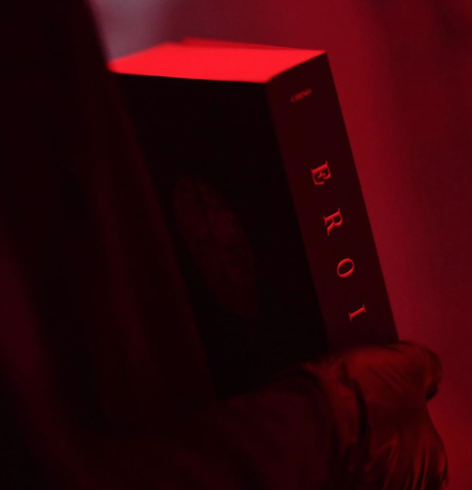

友情 EROICA | CHINO AMOBI
欢迎来到木牙Make Unique Young Arts，让我们一起来探索男人眼中的友情！
随着当代艺术的发展，越来越多的艺术形式也随之出现，多媒体艺术就是其中一种。多媒体艺术是以数码技术为基点，兼容摄影、录像、视频、声音、装置、互动等综合手段进行创作的“多媒体艺术”，多重感受的形式吸引了大家的目光。
作为一位多媒体艺术家，Chino Amobi在音乐，绘画，平面设计，写作和视频上的成就是巨大的。在被他的作品吸引的同时，他对于不同类别的跨界尝试的勇气和热情也同样吸引了我们。我们有幸邀请到了Chino Amobi 来到木牙MUYA。和大家一起倾听他对于不同媒介的想法和感悟，对于作品思想的讲解。

✤ 艺术家简介 ✤
Chino Amobi 是一名多媒体艺术家，他将艺术、绘画、设计、音乐、写作、丰富电影的风格和声音组合在一起。Chino Amobi是独立唱片公司NON Worldwide的联合创始人，也是EROICA的创意总监。2016年，他发行了EP《Airport Music For Black Folk》，2017年发行了首张专辑《Paradiso》，广受好评。他在VCU获得视觉传达MFA学位。
Chino Amobi在VCU也获得了绘画和版画的BFA学位。Chino 在世界各地都有展览，包括纽约新美术馆、洛杉矶当代艺术博物馆、韩国、俄罗斯、法国和巴西。
Chino Amobi Is a multimedia artists who combines art, painting, design, music, writing, and film with a rich assemblage of styles and voices. Amobi is a co-founder of the independent record label NON Worldwide and creative director of EROICA. In 2016 he released the EP Airport Music For Black Folk and in 2017 released his debut album Paradiso to critical acclaim. He received his MFA in Visual Communication at VCU.
Amobi also earned a BFA in Painting and Printmaking from VCU. Chino has performed internationally including the New Museum New York, MOCA Los Angeles, South Korea, Russia, France, and Brazil.
在Luma Westbau 画廊，Chino Amobi 2020年的展览以他的新小说《EROICA》为中心，艺术家将其描述为“史诗般的全球主义惊悚小说”。他这次的装置展览作品用叙述的表达方式营造出了破碎的、幻想的氛围。
在Luma Westbau 画廊，Chino Amobi 2020年的展览以他的新小说《EROICA》为中心，艺术家将其描述为“史诗般的全球主义惊悚小说”。他这次的装置展览作品用叙述的表达方式营造出了破碎的、幻想的氛围。
Chino Amobi’s exhibition at schwarzescafé, Luma Westbau centers on his new novel Eroica, which the artist describes as an “epic globalist thriller”. His site-specific installation takes possession of the gallery, transforming it into a fragmented, fantasy environment, culled from his narrative.
The epic is situated between history and myth. It is a tribute of one character who has made a mark on time to the entire cultural experience of a society. It derives all past, present, and future values of that society from this character thus rendering the epic source of identity serving to distinguish itself from others. And of all the places in the world there is no place I would rather be.
Amobi的混合与合作的创作风格主要体现在音乐，诗歌，出版，表演，视频和视觉效果上。在艺术学校学习的过程中，Amobi制作音乐并化名Diamond Black Hearted Boy（2009-2014）。在2015年，他合作创立了NON Worldwide，这是一个实验性唱片公司，由激进的艺术项目和社交网络组成。他的作品和专辑包括Airport Music for Black Folk (2016)，PARADISO (2017) 和 Illuminazioni (2020)。
Amobi’s hybrid and collaborative practice manifests itself in music, poetry, publishing, performance, video and visuals. While at art school Amobi produced music under the alias Diamond Black Hearted Boy (2009-2014), in 2015 he co-founded NON Worldwide, an experimental record label, art project and social network. His works and albums include Airport Music for Black Folk (2016), PARADISO (2017) and Illuminazioni (2020).


➤ 木牙MUYA: 在你的书《Eroica》中，你对于友情和EROICA的关联是什么？为什么友情是中文的文字？
CHINO AMOBI: 我觉得友谊是合适的，因为如果你看看这些天的新闻，你总是会发现中国和美国的全球关系是负面的。
我想书写出另一种现实，让它更人性化，同时受到我与中国朋友的互动以及我在中国的旅行和表演的启发。一些话题倾向于通过主流地缘政治和经济对话来进行描绘。
I felt like Friendship was fitting because if you look at the news these days you always hear a negative spin between Chinese and American global relations.
I wanted to write about an alternative reality that felt more interpersonal and inspired by my interactions with friends from China as well as my travels and performances there. Something that ran at a slant to and through the mainstream geopolitical and economic dialogue.

➤ 木牙MUYA: 在中国，我们有两句流行语来形容友情：“女人之间的友情就像塑料花，很假却永不凋谢。” 和 “男人之间的友情是，他们都想当对方的爸爸。”你是怎么想的又是如何理解这句话的呢?
CHINO AMOBI: 我认为在人际关系中有一些非常紧密的东西。这让我想起了我最近看《Keeping up with the Kardashians》。女人们之间的互动大部分都是非常有趣和无忧无虑的，没有很高的风险，但朋友之间有一种强烈的纽带，在更严肃的时候，她们会陪在对方身边。有时别太把自己当回事会更好。至于男人，男人通常想要成为拯救世界的人哈哈。
I think there is something very bonding in artificial relationships. It kind of reminds me of 《 Keeping up with the Kardashians 》which I've been watching recently. Most of their interactions between the women on the show are very fun and carefree, not very high stakes, but there is a strong bond there between friends, and they are there for each other during more serious times. Sometimes it's healthy to not take yourself so seriously. As for men, guys usually want to be the ones to save the day haha.
➤ 木牙MUYA: 在你的作品拍摄中经常出现亚洲面孔，是有什么特殊的原因或者特殊的含义吗？
CHINO AMOBI: 我的直觉感受到，这些是全球时尚和艺术的未来面貌。我想把这些面孔带到当下的前沿。
I intuitively feel that these are the faces of the future of global fashion and art. I wanted to bring these faces to the forefront of the present.
➤ 木牙MUYA: 你的大部分作品都与剧场式体验电影和行为艺术相关。你能介绍一下你为什么对这个感兴趣吗?你认为这些艺术创作形式在你的作品中起到了什么样的作用？
CHINO AMOBI: 我经常思考如何活在当下，我们现在所拥有的一切又是怎样的。活着，此时此刻。我想说的是，我所从事的工作，无论是绘画、摄影、音乐、写作、电影，它们都涉及到历史、过去和未来，但首先最重要的是享受当下。
I think a great amount about living in the present. How the present is all that we have. Living. The contemporary the moment. I would say that the liveliness of the work that I do, whether it be painting, photography, music, writing, film, they all involve history, the past, and the future, but are first and foremost steeped in the present.
➤ 木牙MUYA: 你本科时的专业是绘画而研究生则选择了视觉传达设计，你认为这两种不同专业的学习经历对你现在的实践经验和专业研究有什么帮助?
CHINO AMOBI: 我认为绘画让我在观察和工作时的节奏变的缓慢或者是变的更加沉稳和冷静，设计则是让我在观察和创作充满更多的热情。这是我能描述它的最好方式。
I think that painting helps me to see and work slower or more coolly and design helps me to see and work with more heat. That is the best way I can describe it.

➤ 木牙MUYA: 平时是如何收集资料的呢？并且又是怎么样将你收集来的材料和激发灵感相结合?
CHINO AMOBI: 大多数情况下，是习惯性收集那些吸引我的眼球、触动我心灵的东西。我喜欢与朋友以及我仰慕的人一起工作，（从他们的身上，我同样可以深受启发）。
Mostly it is things that catch my eye and move my heart intuitively. I enjoy working with friends and people I have admiration for.
➤ 木牙MUYA: 在 VCUarts 教课/授课期间，你是如何鼓励学生勇敢的去探索他们感兴趣的方向的呢？
CHINO AMOBI: 我试着让他们对热爱的事物感到兴奋，并试着鼓励他们使用具有动人的，出其不意的、和超群的方法去精炼这些热爱与激情，并从中搭建出一种创作信任感。
I have tried to be as excited about what they love as they are and my attempt has been to encourage them to refine these passions in eloquent, unexpected, and sublime ways, and to build trust.


木牙微信订阅号